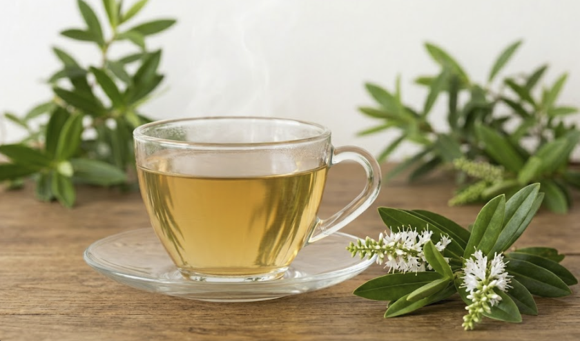

Kōromiko (also known as hebe) is traditionally used in Māori medicine for digestive health. It is known to help treat vomiting and diarrhoea, helping to calm the gut and restore balance.
Kōromiko contains natural compounds with anti-inflammatory and antimicrobial properties, which support the digestive system and help the body recover.